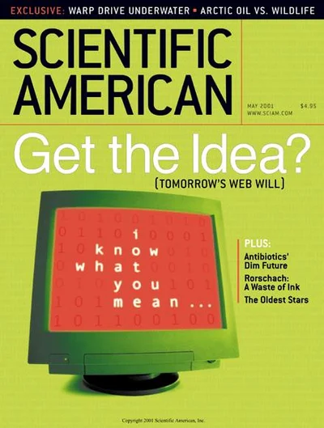

Semantic Web and Linked Data in DH
| XML | Relational DB | RDF |
|---|---|---|
| Hierarchical (tree of elements) | Flat tables (rows and columns) | Graph |
| Document centric | Data centric | Data centric |
| Semi-structured data | Structured data | Structured data |
| XML | Relational DB | RDF |
|---|---|---|
| Hierarchical (tree of elements) | Flat tables (rows and columns) | Graph |
| Document centric | Data centric | Data centric |
| Semi-structured data | Structured data | Structured data |
from data silos to web of data
from extension of indices to linked data
Level 2. Linked Data
SEMANTIC WEB or WEB OF DATA or WEB 3.0
• URIs to identify things (not only documents)
Examples:
Dahlia (plan): https://www.wikidata.org/wiki/Q130918
Dahlia de la Cerda: https://dbpedia.org/page/Dahlia_de_la_Cerda
• Ontologies to define common vocabularies
FOAF (Friend of a Friend): http://xmlns.com/foaf/spec/, CIDOC-CRM: http://www.cidoc-crm.org/cidoc-crm/
• RDF to express data as triples
<https://dbpedia.org/page/Dahlia_de_la_Cerda> foaf:birthday "1985-03-09"^^xsd:date ..
• SPARQL to query data
• Linking data across different sources → Linked Data
Why linked data? Some examples
• Breaks data silos. Connect data from different sources.
Examples:
Library records linked to author biographies and book reviews from other sites.
• Machine-Readable and interoperable. Richer queries and discoveries. Data is published in standard formats (RDF, URIs) so computers can understand and use it automatically.
A search engine combining data about people, places, and events from diverse websites.
Find all researchers working on climate change by querying scholarly and environmental datasets.
• Supports data reuse and updating. Data can be published once and reused by many applications.
Open government data sets reused by civic apps for transparency and services.

"The Semantic Web"
Tim Berners-Lee, James Hendler and Ora Lassila
http://dig.csail.mit.edu/2007/Talks/0108-sw-tbl
"For example in biopax" (slide 16)
Examples of current usage
• An RDF dataset is a Knowledge Graph, sometimes abbreviated as KG (but not all KGs are RDF datasets, other technologies can be used).
Examples:
Google Knowledge Graph
• Semantic web technologies power search engines.
Schema.org has been adopted by web browsers.
The Google KG is used to produce Knowledge Panels.
• Semantic web technologies are used in healthcare, bioinformatics, smart utilities, cultural heritage, government, and more.
Swiss Institute of Bioinformatics data resources
Swiss Food Knowledge Graph
Swiss Open Government data

Some DH related public SPARQL endpoints
- Europeana: digital cultural heritage platform.
- Mapping Manuscript Migrations: pre-modern manuscripts and their movements.
- MiMo TextBase: French Enlightenment novel (1750-1800).
- LiLa (Linking Latin): linguistic resources for latin.
- German National Library: Linked Data service.
- BnF Data: open data of the French National Library.